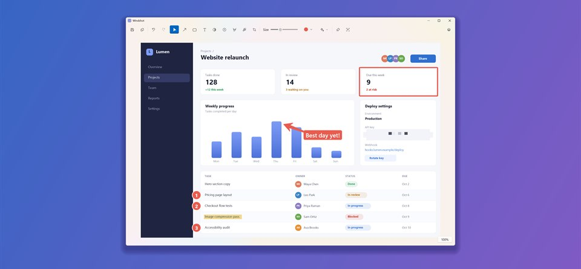
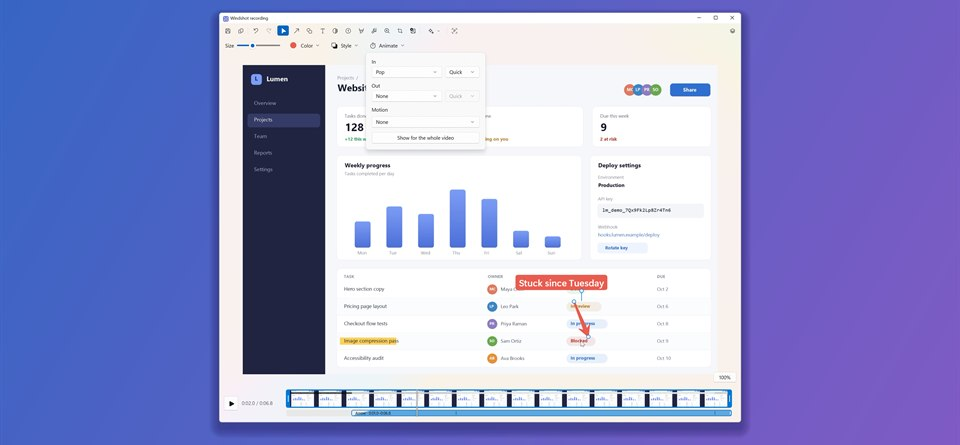

The best Snipping Tool alternative for Windows 11
Windshot vs Snipping Tool, Greenshot and ShareX · Updated October 16, 2026
In short: Snipping Tool is fine for a quick snip, but it can't blur part of a screenshot, add text or numbered steps, capture a long page, or annotate a recording. Windshot does all of that in one simple editor where every annotation stays editable. Greenshot and ShareX are great free tools too, and below is an honest look at when each one is the better pick.
Every Windows 11 PC comes with Snipping Tool, and for plenty of people it's enough. But if you take screenshots for work, such as bug reports, how-to guides, support replies or quick videos for your team, you soon run into its limits. This guide compares four free tools side by side: Snipping Tool, Windshot, Greenshot and ShareX.

Comparison at a glance
| Windshot | Snipping Tool | Greenshot | ShareX | |
|---|---|---|---|---|
| Price | Free | Built in | Free | Free |
| Open source | Yes | No | Yes | Yes |
| Runs on | Windows 11 | Windows 11 (older version on 10) | Windows 10 and 11 | Windows 10 and 11 |
| Region, window and full screen | Yes | Yes | Yes | Yes |
| Scrolling capture | Yes | No | No | Yes |
| Copy text from the screen | Yes | Yes | Yes | Yes |
| Arrows, text, numbered steps | Yes | Pen and shapes | Yes | Yes |
| Blur or pixelate | Yes | Auto-redacts emails and phone numbers | Yes | Yes |
| Layers panel | Yes | No | No | No |
| Screen recording | MP4 and GIF | MP4 and GIF | No | MP4 and GIF |
| Annotate and zoom recordings | Yes | No | No | No |
| Pin a capture on screen | Yes | No | No | Yes |
| Upload to image hosts | No | No | Plugins | Dozens of services |
Based on Windshot 1.5, the current Snipping Tool on Windows 11, Greenshot 1.3 and ShareX 21. Features change, so check each app's own site for the latest.
Why Windshot is better than Snipping Tool
Snipping Tool has improved a lot. It records video, copies text from screenshots, and on Copilot+ PCs it can crop a screenshot to its content. But it's still built for quick snips, not for screenshots you need to explain something with.
- Real annotation tools. Snipping Tool gives you a pen, a highlighter and a few shapes. Windshot adds arrows, text, callouts, numbered steps, a spotlight, stickers, pictures you paste in, and blur or pixelate for anything private, not just email addresses and phone numbers.
- Annotations stay editable. Every arrow, box and blur in Windshot is its own layer. Move it, resize it, restyle it or hide it at any time, instead of erasing and starting over.
- Scrolling capture. Capture a whole web page, chat or long document as one tall image. Snipping Tool can only capture what fits on screen.
- Annotate your recordings. Snipping Tool's markup tools only work on screenshots, and it sends recordings to Clipchamp for editing. In Windshot you mark up a recording in the same editor, choose when each annotation appears, and fade, pop or wipe it in and out.
- Zoom in on what matters. Mark an area of a recording and the video eases in to it and back out, annotations and all. Watch a one-minute example.
- Narrate as you go. Record your PC's sound and your microphone together, start after a countdown, and pause when you need a moment.
- Pin it on screen. Float a capture above your other windows while you work, handy for copying numbers or following steps.
- Ready to share. Put a capture on a gradient backdrop with rounded corners and a shadow in one click.
Windshot still feels like a Windows 11 app: Fluent design, Mica, light and dark mode, and it lives quietly in the tray. You can even set Print Screen to open Windshot in its Settings. If Windows opens Snipping Tool instead, turn off "Use the Print Screen key to open screen capture" under Settings, Accessibility, Keyboard.

When Snipping Tool is enough
If you only grab the odd screenshot to paste into a chat, Snipping Tool is already on your PC and does the job. An older version comes with Windows 10, and Copilot+ PCs get extras like Perfect Screenshot.
Windshot vs Greenshot
Greenshot is a long-standing favorite: small, free, open source and quick to learn. Its editor has the essentials, including arrows, text, speech bubbles, numbered counters, highlighting and obfuscation, and plugins can send captures to other apps and services.
Where Windshot pulls ahead:
- Video. Greenshot is for screenshots only. Windshot records and annotates video too.
- Scrolling capture. Windshot captures long pages. Greenshot captures what's on screen.
- Layers and effects. Windshot's layers panel lets you restack, rename, hide and fade annotations, and its blur and spotlight work like adjustment layers. You also get outlines, shadows, rounded corners and backdrops.
- A modern Windows 11 design, sharp at any display scale, with eight editor themes.
Pick Greenshot if you're on Windows 10, you want a tool you may already know from work, or you rely on one of its plugins to send captures to Office apps or other services.
Windshot vs ShareX
ShareX is the power user's choice. It's free and open source, and it does a huge amount: many capture modes, scrolling capture, text recognition, GIF and video recording, uploads to dozens of services, and custom after-capture workflows. Its image editor has improved a lot this year.
Where Windshot pulls ahead:
- Simplicity. ShareX has hundreds of options across many menus. Windshot is small and does what it does without setup: press a shortcut, capture, mark it up, copy or save.
- Editing recordings. ShareX records video but doesn't annotate it. Windshot gives recordings the same editor as screenshots, plus zooms, animated annotations and trimming.
- Sound without extra setup. Windshot records your PC's sound and your microphone out of the box.
- Layers. Every annotation stays its own editable layer, with a panel to manage them.
- Nothing leaves your PC. Windshot has no uploaders and makes no network connections of its own, so a capture can't end up on the internet by mistake.
Pick ShareX if you want captures uploaded and a link copied automatically, or you like building your own capture workflows.
Which one should you choose?
- Choose Windshot if you want one simple app for screenshots and screen recordings, with an editor where everything stays editable, on Windows 11.
- Stick with Snipping Tool if you rarely annotate and don't want to install anything.
- Choose Greenshot if you need Windows 10 support or one of its plugins.
- Choose ShareX if you want automatic uploads and deep customization.
All four are free, so you can try them all. Windshot is in the Microsoft Store, with every feature included, no account and no ads.

Frequently asked questions
What is the best free alternative to Snipping Tool?
It depends on what you need. Windshot suits people who want a simple Windows 11 app that captures, records and annotates in one editor. ShareX suits people who want automatic uploads and custom workflows. Greenshot suits people who want a small, familiar tool that also runs on Windows 10. All three are free and open source.
Can I make Print Screen open Windshot instead of Snipping Tool?
Yes. In Windshot's Settings you can set any shortcut, including Print Screen. Windows has its own setting that makes Print Screen open Snipping Tool, which you can turn off under Settings, Accessibility, Keyboard.
Can Snipping Tool annotate a screen recording?
No. Snipping Tool's pen, highlighter and shapes work on screenshots only, and it sends recordings to Clipchamp for editing. Windshot lets you add arrows, text, highlights, blur and zooms to a recording in the same editor you use for screenshots.
Is Windshot free?
Yes. Windshot is free and open source, with every feature included, no purchases and no account. See everything it can do.